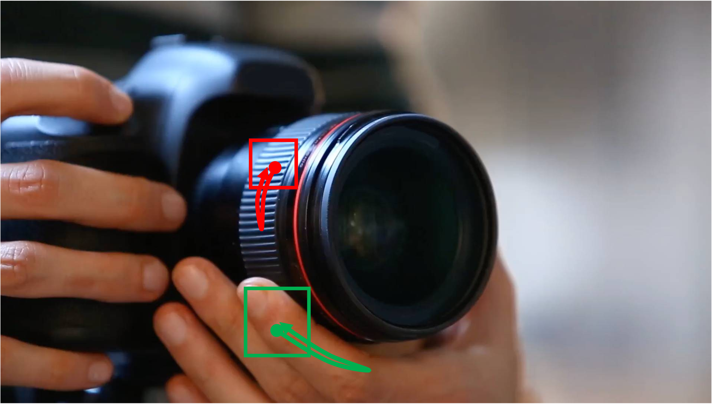

Prompt: A close-up shot of a person holding a DSLR camera. The person is trying to adjust the lens of the camera by rotating it. Everything else remains static in place. Camera remains stationary. Static Camera. Camera locked down at the same place. The video loops back to the beginning of the video after it reaches the end."